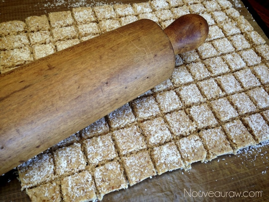
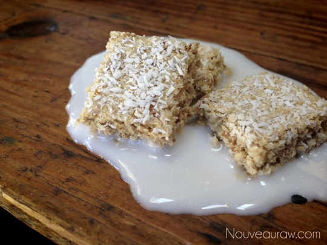

Shredded Coconut Biscuit Cereal

~ raw, vegan, gluten-free ~
Shredded Wheat Cereal used to be one of my many favorite cereals. But then I can say that just about any cereal that has ever been created. When I used to eat commercially made cereal, I enjoyed everything from those made from all bran (my family banned me from eating it due to the digestive effect it had on me haha ) to the most sugar-laden cereal ever made.
I loved them crunchy, soft, warm, or cold. With milk, without milk, in a bowl, in a ziplock bag, out of the box, or straight from my pocket. Gotta love cereal crumbs mixed with pocket lint. Eeew! I was easy to please.
Shredded Wheat is made from toasted wheat fibers, that are woven into single bite-sized squares giving it a unique texture and a taste that’s rather simple and plain. Growing up I ate it dry as an afternoon snack or smothered with milk and sugar.
They also make Shredded Wheat Big Biscuits that are large rectangles that are meant to be cupped in your hand and crushed over a bowl. Then served with milk and sweetener, of course. This was probably my favorite way to eat cereal.
This recipe can be eaten in many ways. Leave the squares whole and pour some nut milk over them and drizzle your favorite sweetener over the top. Or you can cup the squares in your hands and crush them over a bowl, and by adding some milk, it will give you more of a porridge texture. No matter what route you go, add some fresh fruit or raisins to it… lala-licious!
If you have read any of my other cereal recipes, I try to do a “soggy test”. I always want to share how well a cereal stands up to milk. Most all stay crisp for quite some time but this cereal gets soft rather quickly. But boy does it taste good!
- 1 cup packed, moist almond pulp
- 1 1/2 cup shredded coconut flakes
- 1/4 cup raw coconut crystals
- 1/2 tsp ground Ceylon cinnamon
- 1/4 tsp Himalayan pink salt
- 3 Tbsp maple syrup
- 2 Tbsp coconut oil, melted
- 1 Tbsp vanilla extract
- 1/4 cup shredded coconut, extra for dusting
Preparation:
- In the food processor fitted with the “S” blade, combine the almond pulp, coconut, coconut crystals, cinnamon, and salt. Mix well.
- Add the maple syrup, coconut oil, and vanilla. Process until well mixed. The batter should stick together when squeezed.
- Keep in the mind, the batter isn’t a paste-like texture, it will appear crumbly but when squeezed it will stick together.
- If it is too dry, add 1 Tbsp water at a time until the right consistency is reached. This can always vary depending on the nut pulp and how wet or dry it was squeezed out when the nut milk was made.
- Place a teflex sheet on the counter and put the cereal dough in the center of the teflex sheet, press it down into a tight flat ball. Place another teflex sheet on top and using a rolling pin, roll the dough out. I rolled mine to 10 1/2″ x 8″ (about 1/4 -1/2 ” thick).
- Remove the top teflex sheet and sprinkle extra shredded coconut on top.
- Flip the batter over by… Slide the teflex sheet with the rolled out dough on it, on the dehydrator tray frame, on top o that put a teflex sheet on top, then the mesh sheet and then the dehydrator tray… basically making a sandwich between two dehydrator frames. Flip over and remove the tray, mesh sheet, and teflex sheet. Sprinkle this side with shredded coconut as well.
- Score into 1 x 1″ squares. I use a long thin metal ruler. You can use a knife or pizza cutter.
- Dehydrate at 145 degrees F for 1 hour, reduce temp to 115 degrees and continue drying for 6 hours or until dry and crunchy.
- Store in an airtight container on the counter for 2 weeks or in the freezer for up to three months.
- Serve with your favorite milk, top with fresh fruit, and enjoy!!
The Institute of Culinary Ingredients™
- To learn more about maple syrup by clicking (here).
- Raw Coconut Crystals add a “brown sugar” flavor to a recipe. Read about it (here).
- Why do I specify Ceylon cinnamon? Click (here) to learn why.
- What is Himalayan pink salt and does it really matter? Click (here) to read more about it.
- Is coconut butter the same as coconut oil? Click (here) to find out.
Culinary Explanations:
- Why do I start the dehydrator at 145 degrees (F)? Click (here) to learn the reason behind this.
- When working with fresh ingredients it is important to taste test as you build a recipe. Learn why (here).
- Don’t own a dehydrator? Learn how to use your oven (here). I do however truly believe that it is a worthwhile investment. Click (here) to learn what I use.


© AmieSue.com